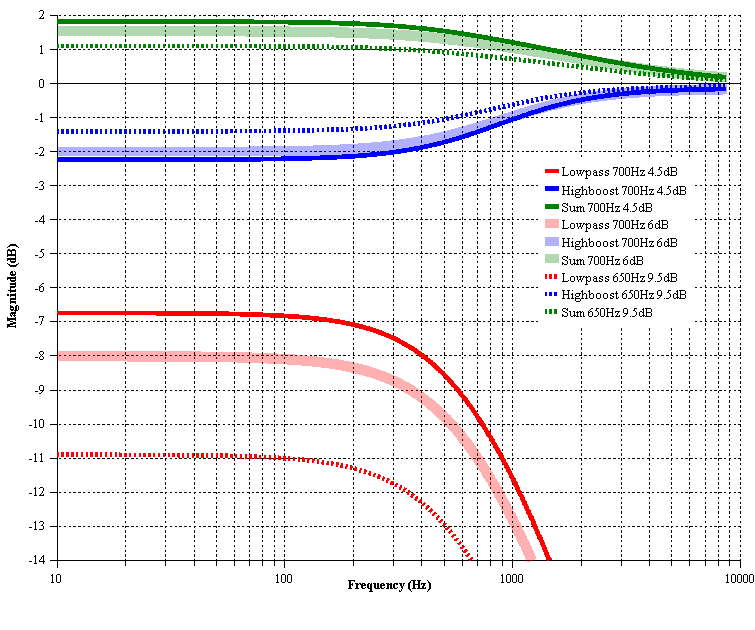
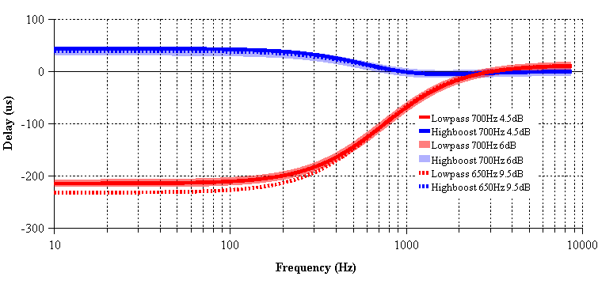
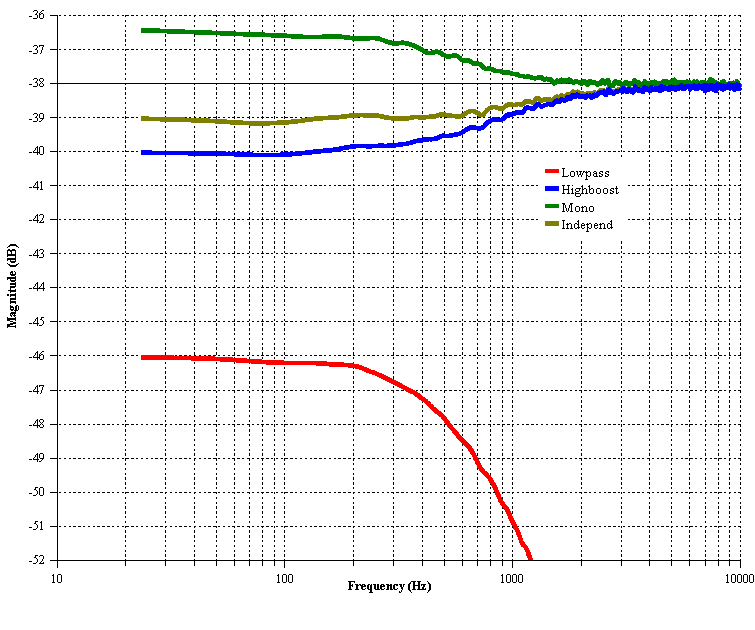
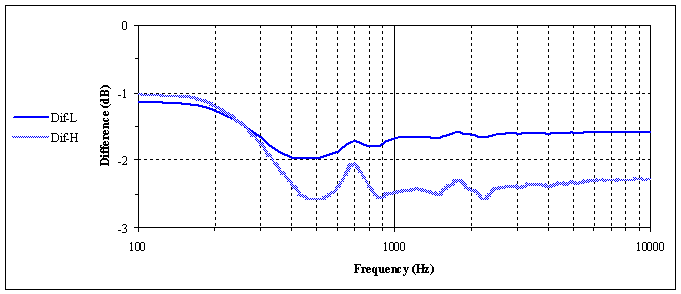

| Bauer stereophonic-to-binaural DSP. 1. Preface. Typical stereo recordings are being made to listen by speakers. This means that a sound engineer makes the stereo mix to the adaptation of sound for listen of one channel by both ears. Therefore, you will be tired during long time headphone listening more because superstereo effect than because of poor designed headphones. What’s missing in headphones is the sound going from each channel to the opposite ear, arriving a short time later for the extra distance traveled, and with a bit of high frequency roll-off for the shadowing effect of the head. And the time delay to the far ear is somewhat longer at low frequencies than at high frequencies. The Bauer stereophonic-to-binaural DSP (bs2b) is designed to improve headphone listening of stereo audio records. This improvement have been well described by electronic circuit designers like Benjamin Bauer [1], Siegfried Linkwitz [2], Chu Moy [3], Jan Meier [4], John Conover [10], HeadRoom [9]. The time delay at low frequency range, lowpass filters, highboost filters and crossfeeding of their electronic circuits has been made by first order RL (Bauer) or RC (Linkwitz, Moy, Meier) analog filters. This design makes the desired effects and naturally excludes the effect of comb filter in the upper range of frequencies through the nonlinear property of phase-frequency response of these filters. bs2b doing the same work through the simple and fast (in comparison with convolution) single pole recursive digital filters, because these filters have the same properties as an electronic RC-filters [5], [6], [7]. I have select a such values of cutoff frequencies of lowpass and highboost filters that allows to provide the desired time delay and most smooth resulting frequency response. Unfortunately, I have not calculated the actual value of the frequency cutoff of highboost filter, but it is not so important. A highboost digital filter can be represented as a two-step filter: as the subtraction of attenuated lowpass filtered signal from original signal. This can be mathematically described by one-step recursive filter. In the first (1.0.0) release of bs2b I applied a two-step method for highboost filter with using of already calculated lowpas filtered signal, but this is done the value of frequency cutoff of highboost filter a little less than I expected, and this led to the thickness of low-medium frequency range. Nevertheless, as written by Chu Moy [3], the frequency cutoff of highboost filter should be a bit higher than this value for the lowpass filter to achieve a smooth frequency response of crossfeeder. Therefore, I made a one-step highboost filter for the second release of bs2b. I started this project because the sound of other audioplayer's headphone plugins, that I heard before, did not satisfy me. Major deterioration of the sound produced by comb filter effect due to the use of FFT convolution with a linear phase frequency response. There is a HeadPlug plugin which have the option 'decomb', and the author writes about this: "The way the plugin does this is really damn-ass straight-forward from a technical point of view". I have tried to make it much easier for the CPU. Last comment. The bs2b does not produce any simulation of ambient, and does not produce any HRTF [8] transform in a high frequency range. Some implementations of the HRTF in a high frequency range are produced by good headphones, except of case of binaural headphones like Etymotic ER-4B. So, try to use bs2b to feel sound little out from your head to lighten the work of your brain. 2. Theory. A single pole recursive filter are presented by recursion eqation: O[n] = a0 * I[n] + a1 * I[n-1] + b1 * O[n-1] where a0, a1, b1 is a recursion coefficients, I[n] is an input samples, O[n] is an output (filtered) samples. Filter's response is relay to recursion coefficients. The table 2.1 shows a perl program that calculates the frequency and a time delay responses of the bs2b by using an H-transform [5]. Table 2.1. bs2b-H-transform.pl.
Figures 2.1 and 2.2 shows the results of the above program. In other words, it is a theoretical responses of bs2b DSP. 'Sum' is the sum of the signals after the lowpass and highboost filters, which can be interpreted as a bs2b action to the two channel mono signal. Figure 2.1. bs2b theoretical frequency response.  On the figure 2.2 a negative value of time represents a delay of signal by microseconds. Figure 2.2. bs2b theoretical time delay response.  Above shows the three versions with different sets of cut-off frequency and crossfeed level: 1) 700 Hz, 4.5 dB - default - this setting is closest to the virtual speaker placement with azimuth 30 degrees and the removal of about 3 meters, while listening by headphones. 2) 700 Hz, 6 dB - most popular - this setting is close to the parameters of a Chu Moy's [3] crossfeeder. 3) 650 Hz, 9.5 dB - making the smallest changes in the original signal only for relaxing listening by headphones - this setting is close to the parameters of a crossfeeder implemented in Jan Meier's [4] CORDA amplifiers. 3. Practical data. Figure 3.1 shows the practical frequency responses of the bs2b with Chu Moy's [3] (700 Hz, 6 dB) setting. This is a frequency analysis of white noise signals applied to bs2b. There is three types of white noise signals: 'Mono' is two channel mono signal; 'Independ' is a two channel independ signal; one channel signal. Processing of the one channel signal through a bs2b is presented as a response of highboost filter and as a response of lowpass filter. Figure 3.1. bs2b frequency response (700 Hz, 6 dB).  Figure 3.2 shows the frequency analysis of a real stereo audio signal. Figure 3.2. J.S. Bach "BWV1066" "Overture" frequency analysis (700 Hz, 6 dB).  4. References. [1] Benjamin B. Bauer. Stereophonic Earphones and Binaural Loudspeakers. JAES Volume 9
Number 2 pp. 148-151; April 1961. http://www.aes.org/
[2] Siegfried Linkwitz. Improved Headphone Listening. Build a stereo-crossfeed circuit. Audio; December 1971. http://www.linkwitzlab.com/
[3] Chu Moy. An Acoustic Simulator for Headphone Amplifiers. (C) 1998-2001 Chu Moy. http://headwize.com/projects/showfile.php?file=cmoy1_prj.htm
[4] Jan Meier. A DIY Headphone Amplifier. [5] Steven W. Smith, Ph.D. The Scientist and Engineer's Guide to Digital Signal Processing. California Technical
Publishing; ISBN 0-9660176-3-3 (1997). http://www.dspguide.com/
[6] Davide Rocchesso. Introduction to Sound Processing. (C) 2003 Davide Rocchesso, GNU
FDL. http://profs.sci.univr.it/~rocchess
[7] BORES Signal Processing: Introduction to DSP. (C) 2004 Bores Signal Processing.
http://www.bores.com/courses/intro/index.htm
[8] Richard O.Duda. 3-D Audio for HCI. (C)
1996-2000 Richard O.Duda. http://interface.cipic.ucdavis.edu/
[9] HeadRoom. About the HeadRoom Crossfeed. (C) 1995-2006 HeadRoom. http://www.headphone.com/products/faqs/about-headroom-crossfeed/
[10] John Conover. Spatial Distortion Reduction Headphone Amplifier. (C) 1992-2005 John Conover. http://www.johncon.com/john/SSheadphoneAmp/index.html
[11] MultimediaWiki: PCM. Copyright (c) 2005-2009 Boris Mikhaylov < http://www.tmn.ru/~bor> |